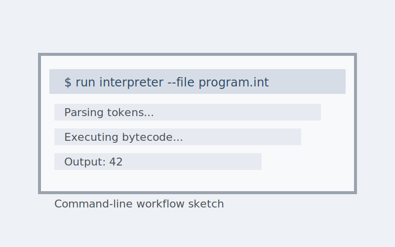

Overview
This interpreter project focuses on building a small, reliable runtime that can parse and execute a simple language. The emphasis is on clear control flow, readable errors, and a practical command-line interface.
Problem
Language tools are easy to use but tricky to build. The goal was to implement a clean pipeline from tokenization to evaluation while keeping the system understandable and debuggable.
Approach
- Implemented parsing and evaluation stages with clear intermediate data structures.
- Built a CLI for running scripts and inspecting runtime output.
- Added error messaging to make syntax and runtime issues easy to diagnose.
Outcome
The interpreter serves as a compact learning tool and a base for future language features. It clarifies how parsing, evaluation, and output fit together in a real workflow.
Tools
C++, CMake, unit tests, command-line tooling.